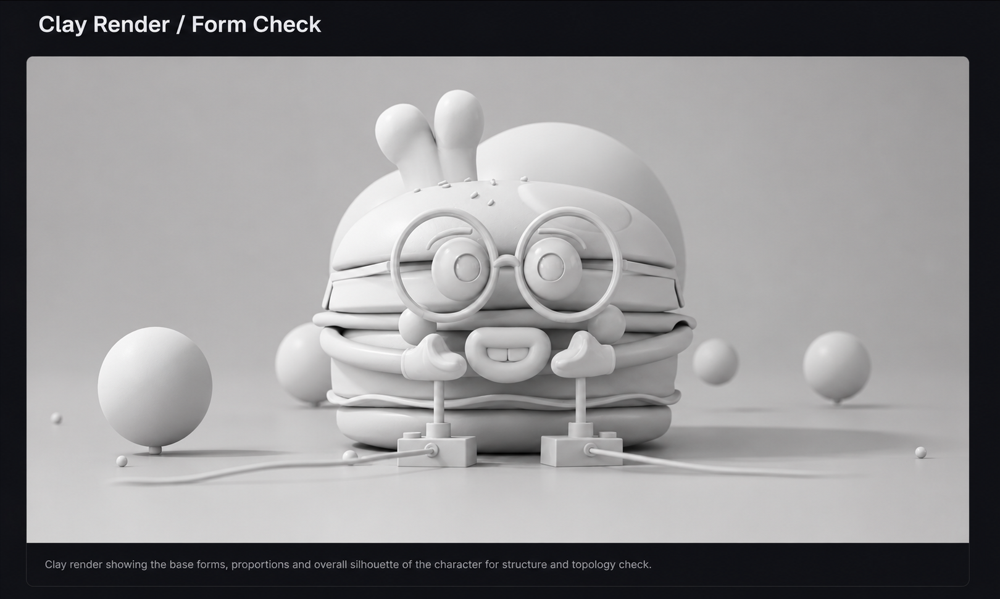
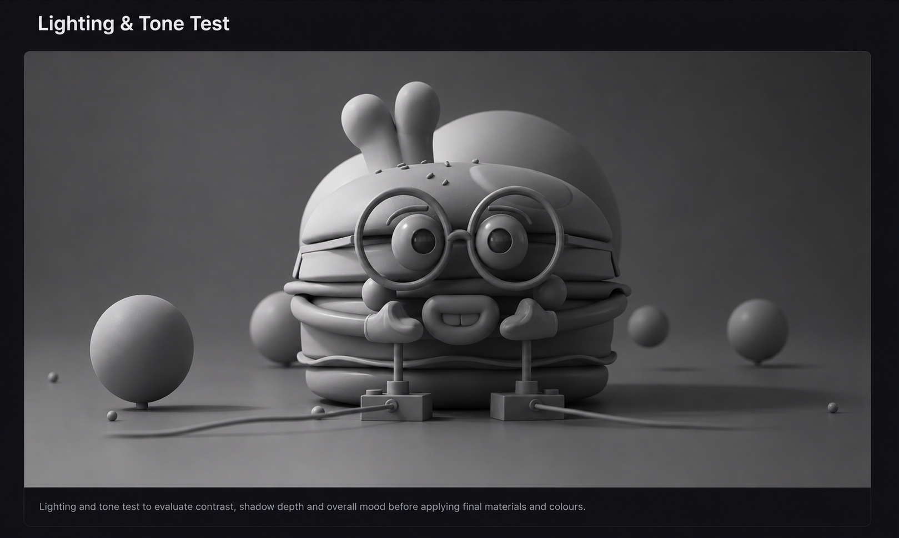
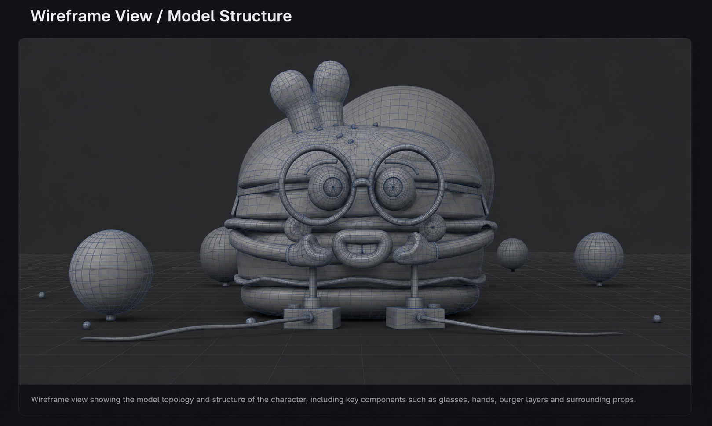
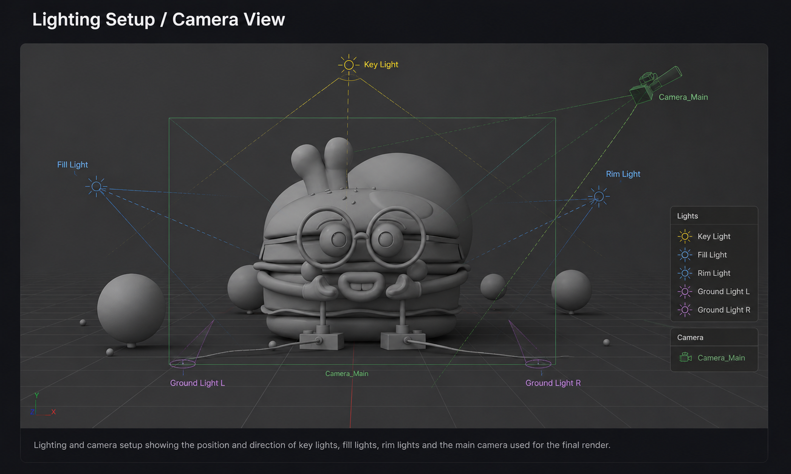
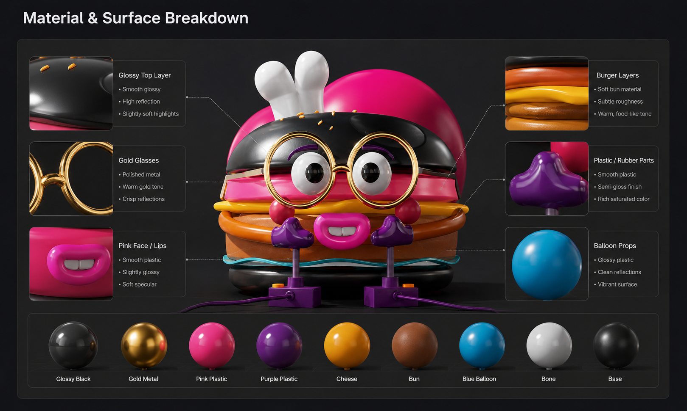

PROJECT 02 / CHARACTER PRESENTATION
Burger Mascot
A stylised character render study exploring playful proportions, glossy materials and a colourful lighting direction.

PRODUCTION VIEWS
Behind the final image.
Form, surface and lighting views from the existing project presentation.




